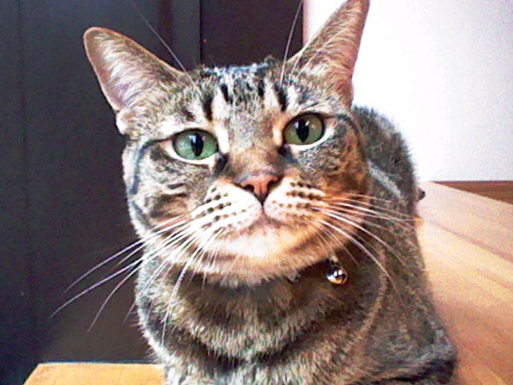
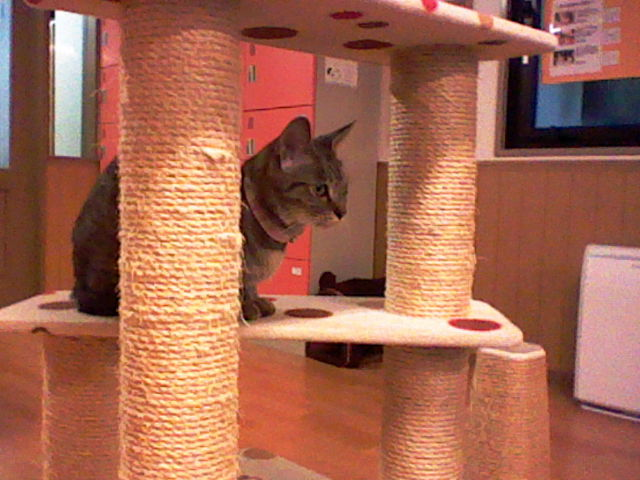
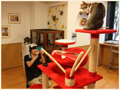
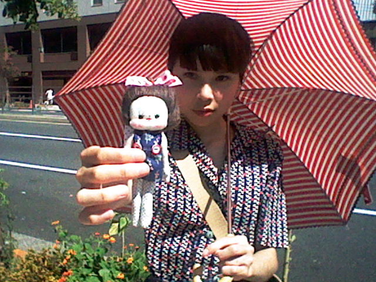
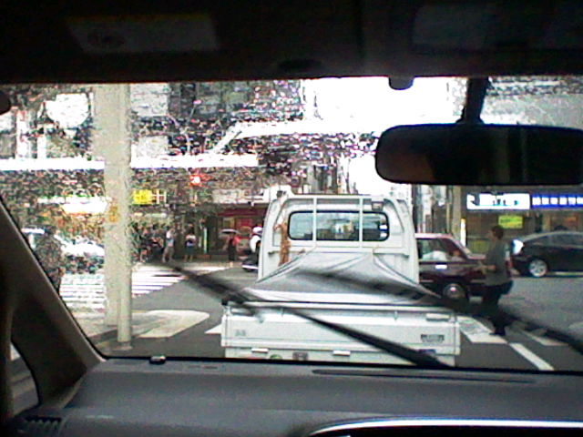
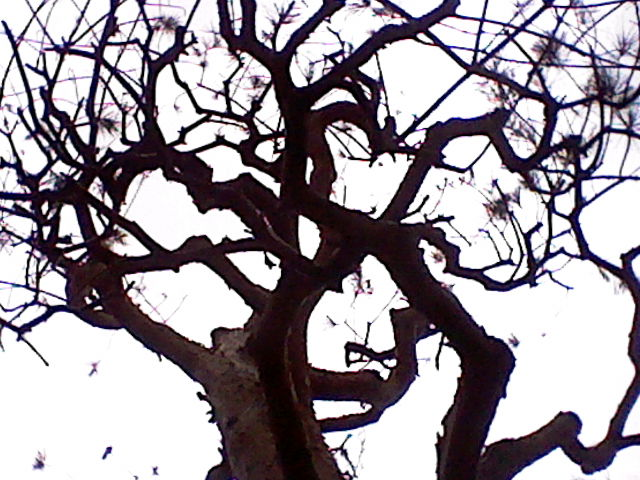
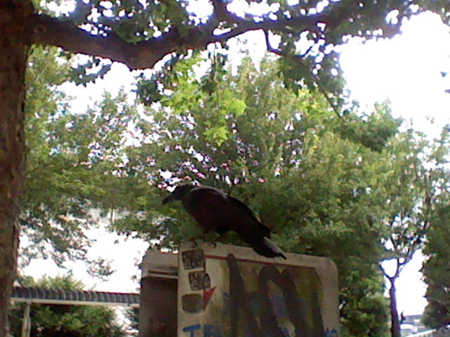
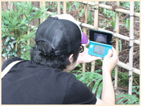

まずは、「ニンテンドー3DSカメラ」でスナップ撮影を行う際に、必ず気をつけておくべき基本的なポイントをうかがいました。これらを意識して撮影に臨むだけでも、撮れる写真の平均的なクオリティはアップするはずです。



まず基本として、とにかくたくさん撮ること。同じ場所や被写体があったら、アングルや設定を変えて何枚も撮ってみてください。被写体や周囲の環境にも左右されますが、可能な限りたくさん撮れば、必ず自分なりに満足できる奇跡の1枚が出てくるはずです。
※
撮影した写真のデータは、SDカードに保存されます。保存先の指定やデータの管理は、「設定」から行いましょう。


3D撮影の際には、一番見せたい被写体を基準にして「手前と奥」を意識するようにすると、立体感のある写真になりやすいです。手前にわざと何か別のモノを置いたり、背景をどのくらい入れるか意識してアングルや構図を考えながら撮るだけで、ずいぶん変わるはずです。逆に、あえて平面的なモノを撮ってみると、意外なほど立体的に見えたりして面白いこともありますよ。



特に3Dで遠くを撮影する際や、暗い場所では、両手でニンテンドー3DSをしっかりとホールドしてください。手ブレやピンぼけを抑えるためにも、自分の目と上画面の間の距離が常に一定になるようにするのがコツです。自分に合った最適な撮影ポジションを意識して探しながら、練習してみてください。
※
Aボタン、またはL/Rボタンでシャッターを切れるので、一番撮影しやすい持ち方を研究してみましょう。